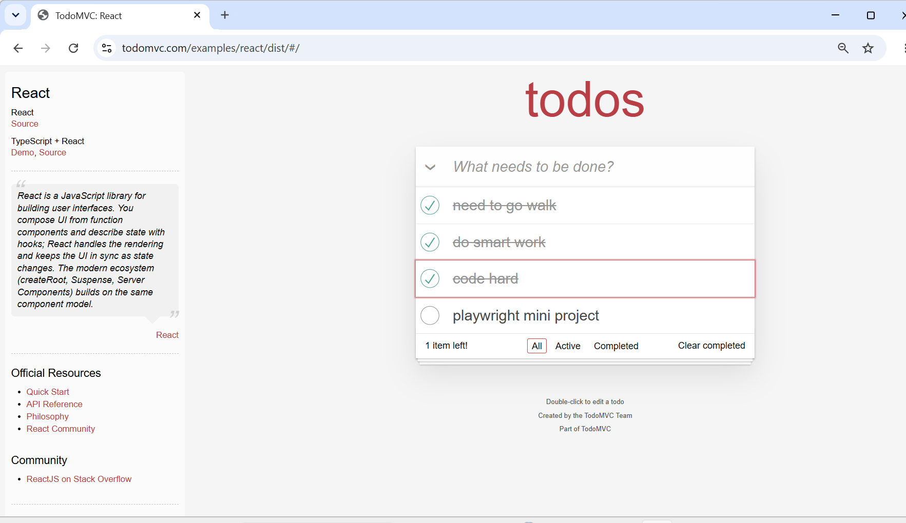
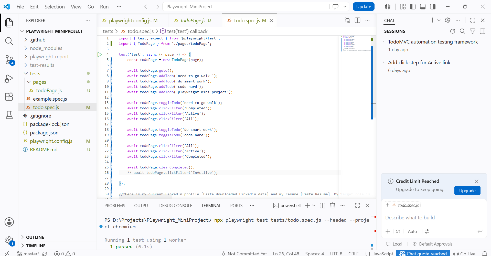
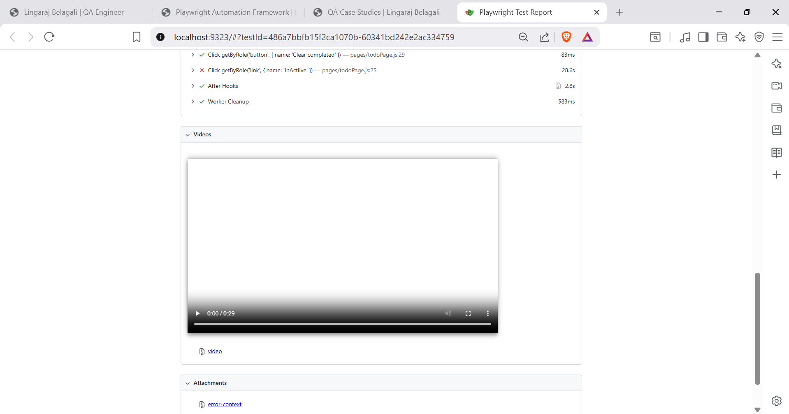

A scalable automation testing framework built using Playwright, JavaScript and the Page Object Model (POM). The framework supports reusable components, HTML reporting, cross-browser testing, and maintainable automation architecture.
This project demonstrates the development of a reusable automation testing framework using Playwright with JavaScript. The framework follows the Page Object Model (POM) design pattern to improve maintainability, readability, and scalability.
It automates the TodoMVC application by validating core user workflows such as adding, editing, completing, and deleting tasks while generating detailed HTML execution reports.
Automated Test Cases
Page Objects
Execution Time
HTML Reporting
The framework is designed using the Page Object Model (POM), separating page objects, test cases, utilities, and configuration files to improve scalability and maintainability.
playwright-framework/ ├── pages/ ├── tests/ ├── utils/ ├── fixtures/ ├── reports/ ├── screenshots/ ├── playwright.config.js ├── package.json └── README.md
Every test execution follows a structured workflow, ensuring maintainability, reusability, and accurate reporting.
Executes test scenarios.
Reusable page methods.
Finds UI elements.
Validates expected result.
Generates execution report.
The framework automates the core business workflows of the TodoMVC application, ensuring stability, regression coverage, and functional correctness.
Verify users can create a new task successfully and the task appears in the list.
Validate users can modify existing tasks without affecting other records.
Verify completed tasks can be removed and the UI updates correctly.
Validate completed tasks display the correct completed state.
Ensure only active tasks are displayed when Active filter is selected.
Validate only completed tasks are displayed using the Completed filter.
Verify completed tasks are permanently removed using the Clear Completed option.
Validate labels, counters, filters and task visibility throughout execution.
A visual walkthrough of the automation framework, application under test, execution process, and reports.

TodoMVC application used for automation testing and end-to-end validation.
Organized project using the Page Object Model with reusable utilities and configuration files.

Playwright test execution from the terminal showing automated test results.

Interactive Playwright HTML report displaying passed, failed and execution details.
Watch the automation framework in action and explore the source code used to build the project.
Complete walkthrough of the Playwright Automation Framework with execution and reporting.
Watch on YouTubeExplore the project structure, reusable components, and automation scripts.
View RepositoryDesigned a scalable Playwright framework using Page Object Model for easy maintenance.
Automated core TodoMVC workflows covering CRUD operations and UI validations.
Generated interactive HTML reports for easy result analysis.
Centralized locators and reusable utilities reduced duplicate code.